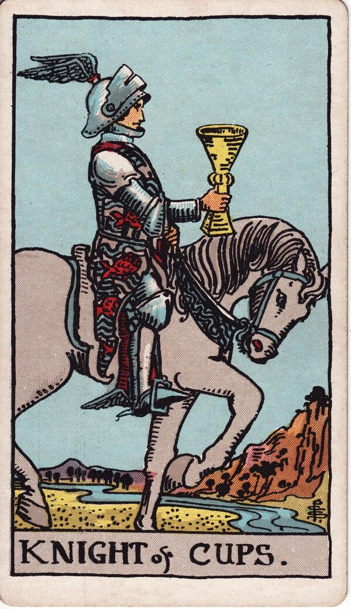

Minor Arcana · Suit of Cups
Knight of Cups Tarot Card Meaning
The Knight of Cups is the romantic riding in with a cup held out — charm, an offer, the heart leading. Want to know what it means in your spread? Every reader on our line is hand-vetted — connect in under 60 seconds, $1 for your first minute, hang up anytime.
- Hand-vetted readers
- Available 24/7
- Hang up anytime

Knight of Cups — What It Shows
A knight rides a calm white horse at a slow, graceful pace, holding out a single cup like an offering. His armour is decorated with fish; winged sandals echo Hermes the messenger. Unlike the charging Knight of Wands, he moves gently — this is the heart on a quest, not fire on a rampage. The Knight of Cups is the water suit in motion: romance, invitation, and following feeling toward someone or something.
Knight of Cups Upright Meaning
Upright, the Knight of Cups is the romantic and the offer. A proposal, an invitation, a charming overture, or the choice to follow your heart toward what moves you. It's idealistic and sincere — beauty, art, and love-led action. Its core note is the offer extended: someone is bringing the cup, or you're being asked to.
Knight of Cups Reversed Meaning
Reversed, the romance gets unreliable. Moodiness, unrealistic ideals, all-feeling-no-action, broken promises, or charm used to manipulate. It can be someone in love with the fantasy rather than the person, or an offer that never quite materialises.
Knight of Cups as a Person
As a person, the Knight of Cups is charming, romantic, sensitive, and idealistic — a dreamer and a lover, often artistic and sincere. The shadow: flaky, moody, or more in love with the idea of love than with the actual relationship.
Knight of Cups as Feelings & in Love
As feelings, the Knight of Cups is romantic, idealised attraction — they're smitten and inclined to pursue or to make an offer. Example: a caller asked how someone felt after a charming start that went quiet; the Knight of Cups read as genuine romantic feeling paired with feeling-runs-ahead-of-follow-through — real interest, inconsistent delivery — so she could weigh the romance against the reliability.
Knight of Cups in Career & Money
For work it's a tempting offer, a creative or values-led opportunity, or following inspiration over pure logic. Example: someone weighing a heartfelt-but-risky creative offer pulled this card; the message honoured the pull while flagging the Knight's blind spot — make sure the dream has a plan, not just feeling.
Knight of Cups as Advice
As advice: lead with the heart, but ground it. Make or accept the sincere offer, follow what genuinely moves you — and back the romance with follow-through so it isn't all gesture.
Knight of Cups Reversed in Love & Career
Reversed, this card deserves a closer look by area. In love, it's the charmer who doesn't deliver — sweet talk without substance, hot-then-distant, idealising you then losing interest, or even love-bombing. It's not always malicious; often it's immaturity or being in love with the fantasy. In career, reversed it's an offer that evaporates, all-vision-no-delivery, or a tempting opportunity that's more glamour than substance. The reversed Knight's question is whether the romance has any follow-through. A live reader can help you read the pattern, not just the charm.
What People Ask About the Knight of Cups
The questions readers hear most about this card:
"Is it a proposal / offer card?"
Often — an invitation, declaration, or romantic offer incoming.
"Knight of Cups as feelings?"
Smitten, romantic, idealising you — strong but sometimes inconsistent.
"Will they make a move?"
Upright leans yes — the cup is being offered; reversed, less reliably.
"Reversed — are they playing me?"
Possibly charm without follow-through; not always deliberate. Context matters.
Knight of Cups — Yes or No?
Upright: a romantic yes, especially for offers and love. Reversed leans no, or "yes in words, not in action."
Knight of Cups Timing in a Reading
Timing is the least precise thing tarot does, so treat this as a lean, not a date. Court cards describe a person or energy more than a clock; when this Knight does flag timing, readers frame it as an offer or approach within weeks, moving at a gentle, unhurried pace. Reversed, the timeline drifts as follow-through wavers. A live reader reads timing from the full spread and your question far more reliably than the card alone.
Knight of Cups Card Combinations
Context changes everything — a few pairings readers see often:
Knight of Cups + Two of Cups
A romantic offer leading to a real, mutual partnership.
Knight of Cups + The Moon
Romance clouded by illusion — read the offer carefully.
Knight of Cups + Page of Cups
Tender interest maturing into a sincere proposal.
Knight of Cups in a Tarot Reading
A meanings page is the map; a live reading is the territory. The Knight of Cups shifts with its position and the cards around it — which is what a hand-vetted reader interprets for your question. See the full Suit of Cups, all 56 cards on the Minor Arcana hub, or start a phone tarot reading.
← Page of Cups · Next: Queen of Cups →
What Does the Knight of Cups Mean for You?
A meanings list is the map; a live reading is the territory. We'll connect you with the right hand-vetted tarot reader in under 60 seconds. $1/min first call · 15 minutes for $10 · hang up anytime · 100% satisfaction promise.
Call (888) 920-6662 NowKnight of Cups — Frequently Asked Questions
What does the Knight of Cups mean?
The romantic and the offer — following the heart, charm, and an invitation or proposal.
What does it mean reversed?
Moodiness, unrealistic ideals, broken promises, or charm used to manipulate.
What does it mean as feelings?
Romantic, idealised attraction — smitten, though feeling can outrun follow-through.
What does it mean as a person?
A charming, romantic, sensitive idealist — a dreamer and lover.
How much does a reading cost?
First-time callers pay $1/min, or 15 minutes for $10, and you can hang up anytime.
Get Your Tarot Reading Now
Connected to a hand-vetted reader in under 60 seconds, the cards pulled on your real question, and you hang up with clarity.
Call (888) 920-6662